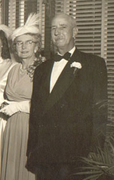

Arthur Rich Curnick was the son of Theophilus Curnick, the prominent Boston Methodist preacher. He graduated from Boston University. Arthur married Gladys Deward. Whilst living in Cambridge, Massachusetts they had a daughter, Ruth, their only child.
Arthur was a travelling business man, who sold advertising for insurance. He copyrighted a fancy border in which he would pen witticisms. Arthur had a routinue that allowed him to have great success: He owned a big fancy car, and when he came to a medium-sized town he'd check into the fanciest hotel. Then Arthur'd go to the biggest bank in town and, feigning a desire to purchase some, asked who the most up-and-coming insurance salesman in town was. Then, with this information, he'd visit the office of the insurance salesman, telling him that, so-and-so, the owner of the biggest bank in town, said he was the most up-and-coming insurance salesman, and wouldn't he like to buy some advertising. This was how Arthur sold his product. He sold two-year liscences (for the price of $300) and kept meticulous records, always returning in person to see that the liscence was renewed. Arthur would use the money from the sale to pay his bills and then move on to the next burg. No doubt his Boston breeding helped sell this image of a rich, successful businessman. However, Arthur wasn't always successful, and he knew how to sneak out of a hotel without paying his bill as well.
| After a couple years, Gladys insisted in coming along, so he took his family with him. They kept a house in Massachusetts, which Arthur had inherited, and a a house in Daytona, Florida, which they lived in in the winter time when Arthur wasn't on the road. Eventually they lost the house in Massachusetts, but they lived in Florida til the day he died. Arthur was known as a jovial fellow, and always had great stories to tell. His daughter eventually went to college and graduate school, wed, and started raising a family just outside of Washington, DC. Arthur and Gladys visited them for extended stays as he grew older. His American ingenuity had allowed him to live a good life, but he had always lived it hand to mouth. When he finally died, he left behind him the house in Florida, a old Packard, an invalid wife, and a $1.97 in his bank account. |
 |